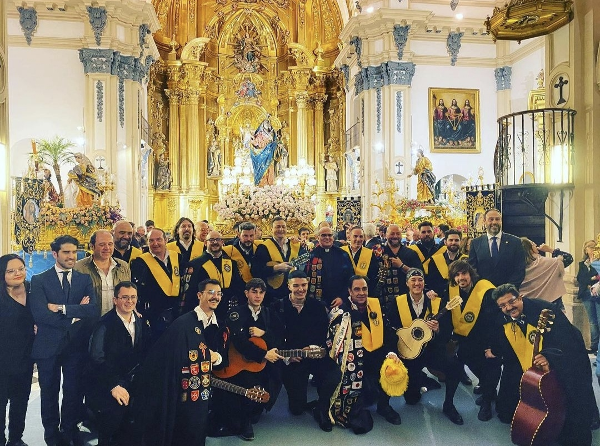

SERENATA A LA VIRGEN DE LOS DOLORES EN LA IGLESIA DE SAN NICOLAS (MURCIA)

El viernes de Dolores, a las 0:00 horas, le cantamos a la Dolorosa por su onomástica, en la puerta de
la Iglesia de San Nicolás, en un acto muy sentido y lleno de solemnidad.
Al abrirse las puertas a medianoche, la cofradía, llevando a la Virgen, fue saliendo poco a poco de
la Iglesia y fue en ese momento en el que le cantamos con todo el respeto y el cariño que nos
caracteriza.
Un evento muy bonito para marcar el inicio de las procesiones y que esperemos se repita cada año.
Este fin de semana hemos tenido el gran privilegio de hermanarnos con la Tuna De Peitos de Jaén.
El acto tuvo lugar en Almería, cuya Catedral se puede ver de fondo en la foto.
Un fin de semana de auténtica convivencia y música por las calles de esta magnífica ciudad.
TRADICIONAL RECOGIDA DE ALIMENTOS DE NOCHEVIEJA
Recogida de alimentos. Puerta del mercado.
Como ya viene siendo tradición, creo que este año es el séptimo que lo hacemos, la Tuna de la Facultad de Medicina de la Universidad de Murcia ha estado cantando esta mañana de 31 de Diciembre en el mercado Saavedra Fajardo de Murcia, con
el fin de recoger alimentos que luego llevamos al comedor social "Jesús Abandonado".
Todos los comerciantes han mostrado su solidaridad y han dado todo tipo de alimentos, con los que hemos llenado 3 carros de comida.
Recogida de alimentos. Puerta del comedor social.
Sin duda es una de las actuaciones más bonitas que hacemos al año, porque además de alegrar el día de Nochevieja a las personas y comerciantes que hay en el mercado, ponemos nuestro granito de arena llevando alimentos a quienes más los
necesitan.
Por supuesto, también hemos cantado en el centro social "Jesús Abandonado" al llevar la comida a las cocineras y voluntarias del mismo.
Esperemos que esta tradición no se pierda y sea una actividad fija anual, entre los varios actos sociales que hacemos cada año.